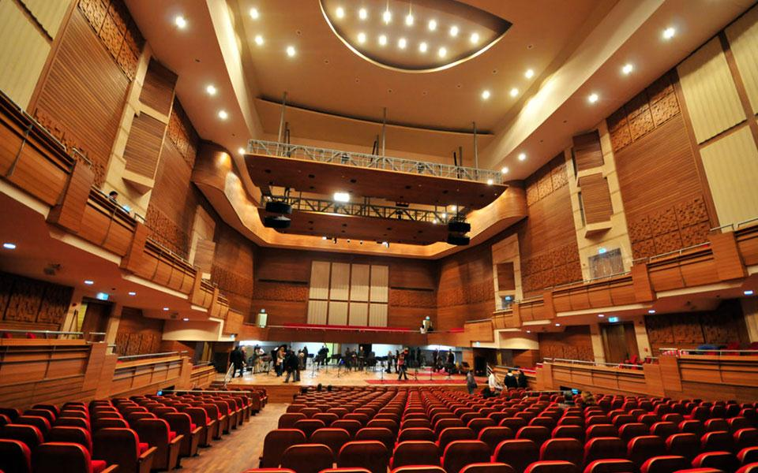
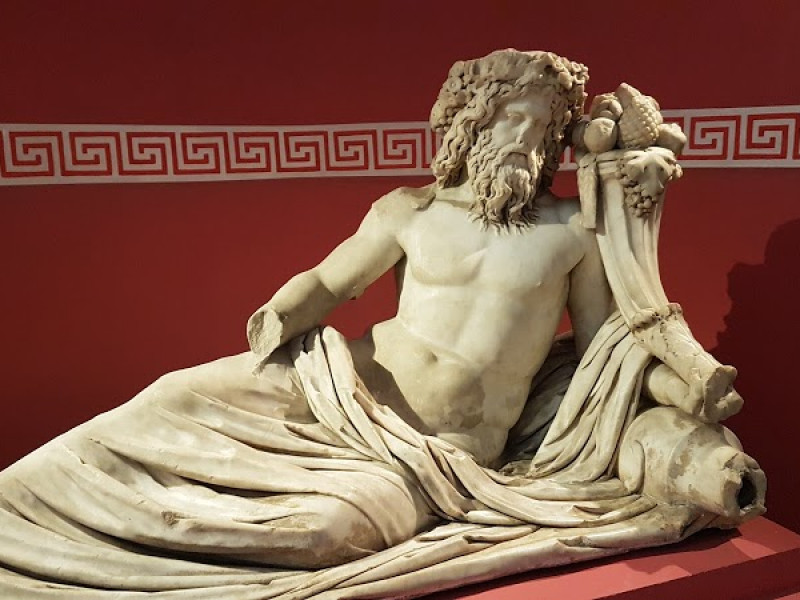
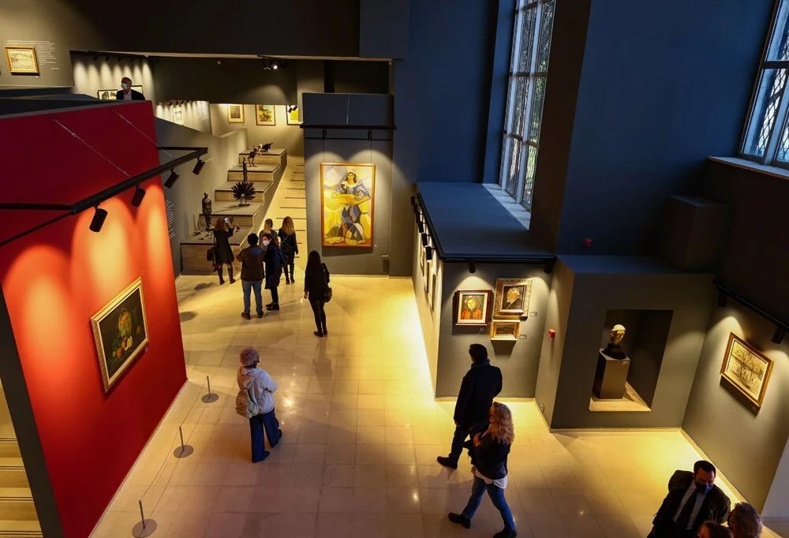
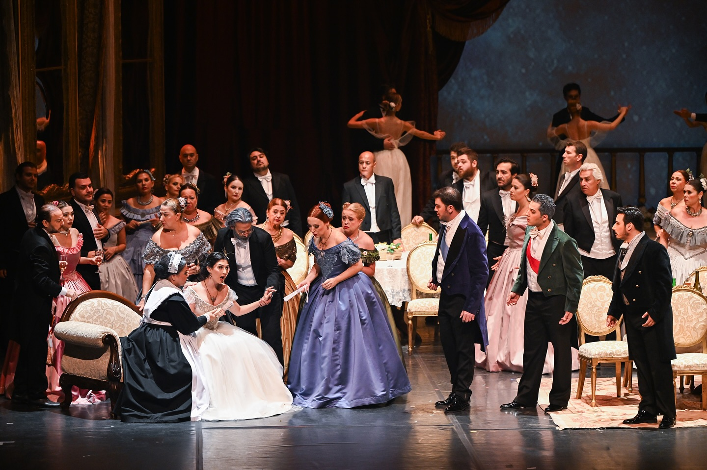
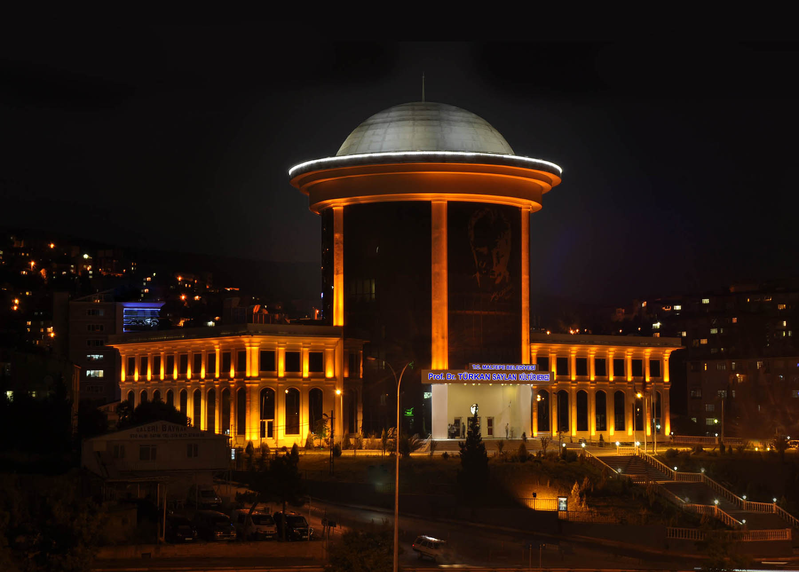

İzmir’in en prestijli sanat merkezlerinden biri olan AASSM, konser salonları, sergi alanları ve klasik müzik etkinlikleri ile öne çıkar.
Adres: Mithatpaşa Cad. No:1087, Güzelyalı, Konak/İzmir
Açık Günler: Her gün (Etkinliğe göre değişebilir)
Giriş: Bazı etkinlikler ücretli, bazıları ücretsizdir

Konserler, tiyatro oyunları ve film gösterimleriyle İzmir’in kültür hayatında önemli bir yere sahip olan bir merkezdir.
Adres: Kültürpark, Lozan Kapısı, Alsancak/İzmir
Açık Günler: Pazartesi hariç her gün
Giriş: Etkinliğe göre değişiklik gösterebilir

Çağdaş Türk sanatının önemli örneklerini barındıran bu müze, hem kalıcı hem geçici sergilerle sanatseverleri ağırlar.
Adres: Atatürk Cad. No:452, Konak/İzmir
Açık Günler: Pazartesi hariç her gün
Giriş: Ücretsiz

Opera, bale ve klasik müzik konserlerine ev sahipliği yapan bu tarihi yapı, sanatın kalbinin attığı bir noktadır.
Adres: Atatürk Cad. No:100, Konak/İzmir
Açık Günler: Gösteri günleri
Giriş: Biletli

Paneller, tiyatrolar, sergiler ve çocuk etkinlikleri gibi birçok farklı sanat ve kültür faaliyetine ev sahipliği yapar.
Adres: Karşıyaka Çarşı, Karşıyaka/İzmir
Açık Günler: Her gün
Giriş: Genellikle ücretsiz